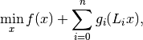
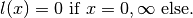
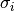
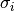
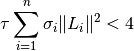
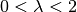
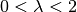
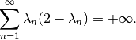

douglas_rachford_pd¶
-
odl.solvers.nonsmooth.douglas_rachford.douglas_rachford_pd(x, f, g, L, niter, tau=None, sigma=None, callback=None, \*\*kwargs)[source]¶ Douglas-Rachford primal-dual splitting algorithm.
Minimizes the sum of several convex functions composed with linear operators:
min_x f(x) + sum_i g_i(L_i x)
where
f,g_iare convex functions,L_iare linearOperator’s.Can also be used to solve the more general problem:
min_x f(x) + sum_i (g_i @ l_i)(L_i x)
where
l_iare convex functions and@is the infimal convolution:(g @ l)(x) = inf_y g(y) + l(x - y)
For references on the algorithm, see algorithm 3.1 in [BH2013].
- Parameters
- x
LinearSpaceElement Initial point, updated in-place.
- f
Functional proximal factoryfor the functionf.- gsequence of
Functional’s Sequence of of the functions
g_i. Needs to haveg[i].convex_conj.proximal.- Lsequence of
Operator’s Sequence of
Operator’s with as many elements asg.- niterint
Number of iterations.
- taufloat, optional
Step size parameter for
f. Default: Sufficient for convergence, seedouglas_rachford_pd_stepsize.- sigmasequence of floats, optional
Step size parameters for the
g_i’s. Default: Sufficient for convergence, seedouglas_rachford_pd_stepsize.- callbackcallable, optional
Function called with the current iterate after each iteration.
- x
- Other Parameters
- lsequence of
Functional’s, optional Sequence of of the functions
l_i. Needs to havel[i].convex_conj.proximal. If omitted, the simpler problem withoutl_iwill be considered.- lamfloat or callable, optional
Overrelaxation step size. If callable, it should take an index (starting at zero) and return the corresponding step size.
- lsequence of
See also
odl.solvers.nonsmooth.primal_dual_hybrid_gradient.pdhgSolver for similar problems.
odl.solvers.nonsmooth.forward_backward.forward_backward_pdSolver for similar problems which can additionaly handle a differentiable term.
Notes
The mathematical problem to solve is

where
 ,
,  ,
,  are proper, convex and lower
semicontinuous and
are proper, convex and lower
semicontinuous and  are linear operators. The infimal
convolution
are linear operators. The infimal
convolution  is defined by
is defined by
The simplified problem,

can be obtained by setting

To guarantee convergence, the parameters
 , 
and need to satisfy
, 
and need to satisfy
The parameter
 needs to satisfy 
and if it is given as a function it needs to satisfy
needs to satisfy 
and if it is given as a function it needs to satisfy
References
[BH2013] Bot, R I, and Hendrich, C. A Douglas-Rachford type primal-dual method for solving inclusions with mixtures of composite and parallel-sum type monotone operators. SIAM Journal on Optimization, 23.4 (2013), pp 2541–2565.